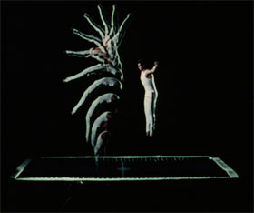

Creme 21

Eve Heller – Austria / USA 2013 – 10 min.
S+T: Eve Heller – V: Sixpackfilm
HD – no dialogues
„Creme 21“ concludes in interplanetary space, as a dream logical, cosmic composition, an avant-garde science fiction on the pleasures of analog cinema. “What is ‘now’? ” inquires a woman’s voice – to which the film coolly replies: “Now” is always simply that instant you just missed. – Stefan Grissemann
Tuesday 14/10 10:30 p.m. Werkstattkino
Eve Heller, born in 1961 in Massachusetts, USA. Film studies at the S.U.N.Y. Department of Media Studies in Buffalo and New York University. She lives and works as a film artist in Vienna and New York.
Filme (selection): Astor Place 1997 – Her Glacial Speed 2001 – Behind This Soft Eclipse 2004 One 1978 bis 2010 – Self-Examination Remote Control 1981 bis 2010 – Creme 21 2013